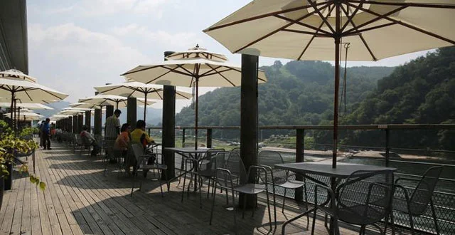
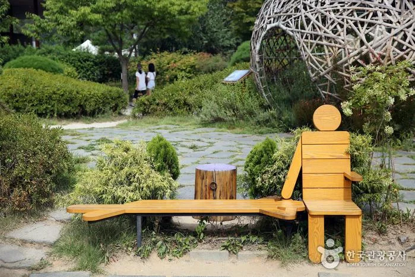
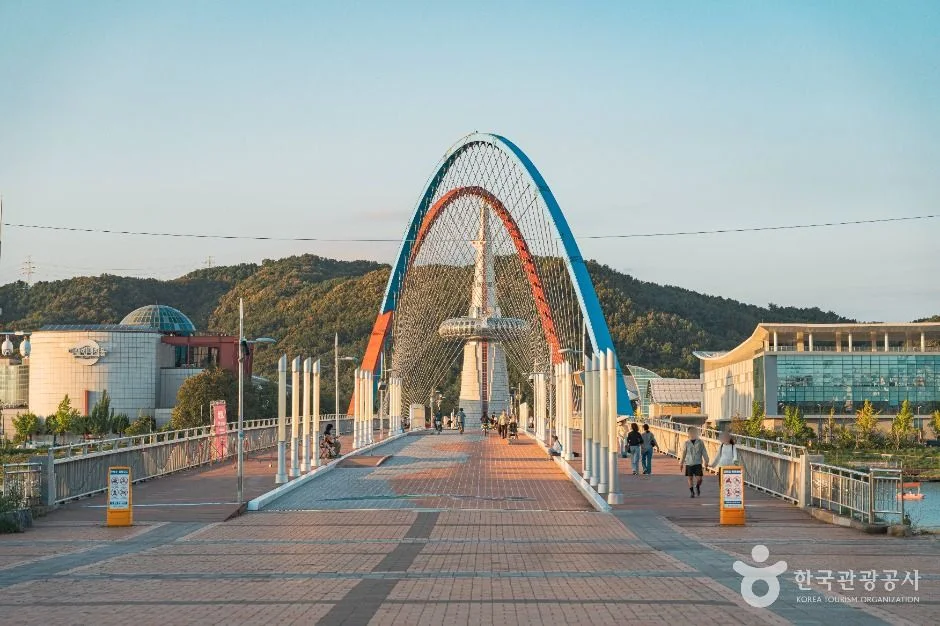
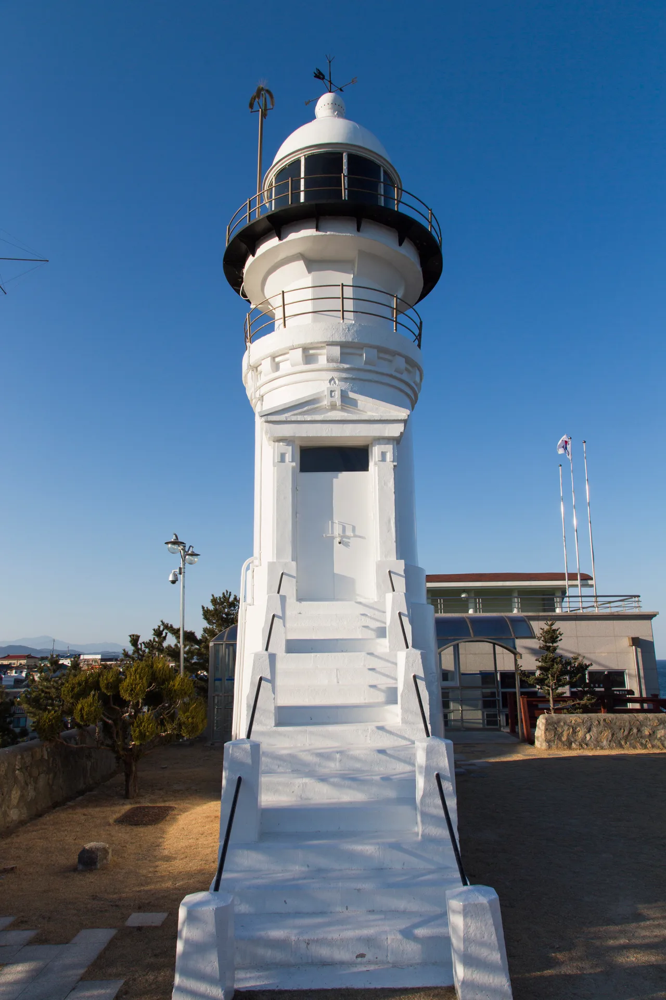

▲ 덕평자연휴게소. 정원과 산책로를 갖춘 테마휴게소다 ⓒ 한국관광공사 (공공누리 제1유형)
휴게소는 장거리 운전에서 유일하게 계획할 수 있는 정차 지점입니다. 그런데 대부분은 화장실과 식사 두 가지로만 씁니다.
모르고 지나가면 손해를 보거나, 손해를 넘어 과태료를 무는 항목도 있습니다.
1. 휴게소는 한 종류가 아닙니다
| 구분 | 성격 |
|---|---|
| 일반 휴게소 | 식음·주유·화장실 중심 |
| 화물차휴게소 | 수면·샤워·세탁 시설 · 24시간 무료 |
| 테마휴게소 | 정원·산책로·쇼핑 등 체류형 |
한국도로공사 고속도로 공공데이터 포털에서 노선명·방향·구분을 골라 검색할 수 있습니다. 어느 방향에서 진입 가능한지가 함께 나오므로, 가는 길에 있는지를 미리 확인할 수 있습니다.

▲ 강과 산을 내려다보는 테라스를 갖춘 휴게소도 있다 ⓒ 한국관광공사 (공공누리 제1유형)
2. 비어 있어도 화물차 칸은 아닙니다
가장 흔한 실수입니다. 연휴에 자리가 없어 비어 있는 화물차 구역에 승용차를 대는 경우입니다.
이 행위 자체에 법으로 정해진 과태료 항목이 따로 있는 것은 아닙니다. 다만 휴게소 관리 주체의 계도와 이동 조치 대상이고, 그대로 방치되면 장기 주차 규정이 적용됩니다.
| 상황 | 조치 |
|---|---|
| 화물차 구역 주차 | 계도·이동 요청 — 미조치 시 장기 주차 규정 적용 |
| 24시간 이상 방치 | 승용차 5만 원 수준 과태료 또는 견인 |
| 화물차·버스 | 면적을 더 차지해 금액이 높아짐 |
| 견인 시 | 과태료와 별도로 견인비·보관료 부담 |
📍 왜 비어 있어도 안 되나
화물차는 연속 운전 시간이 법으로 제한돼 있습니다. 정해진 시간마다 쉬어야 하는데, 세울 자리가 없으면 갓길이나 램프에 정차하게 됩니다.
고속도로 갓길 정차는 2차 사고 위험이 가장 큰 상황입니다. 화물차 구역을 따로 두는 것은 편의가 아니라 안전 설계에 가깝습니다.

▲ 연휴 휴게소는 주차장 진입에만 30분이 걸리기도 한다. 자리가 없다고 화물차 구역으로 가면 안 된다 ⓒ 부산광역시 (공공누리 제1유형)
▲ 덕평의 소고기밥, 안성의 안성국밥처럼 휴게소마다 대표 메뉴가 다르다 ⓒ 한국관광공사 (공공누리 제1유형)
3. 화물차휴게소는 누구나 쓸 수 있습니다
반대로 잘 모르고 못 쓰는 것도 있습니다. 화물차휴게소의 수면시설·샤워시설·세탁시설은 24시간 무료로 개방되며 일반 고객도 사용할 수 있습니다.
장거리 운전에서 졸음이 오는데 잘 곳이 마땅치 않을 때 쓸 수 있는 선택지입니다. 차 안에서 웅크리고 자는 것보다 회복이 빠릅니다.

▲ 휴게소는 장거리 운전에서 유일하게 미리 계획할 수 있는 정차 지점이다 ⓒ 한국관광공사 (공공누리 제1유형)

▲ 장거리 이동에서 30분 휴식은 사고 위험을 실제로 낮춘다 ⓒ 한국관광공사 (공공누리 제1유형)
4. 24시간 넘기면 견인 대상
휴게소 주차장은 임시 정차 공간입니다. 주차면에 차가 24시간 이상 그대로 서 있으면 관리사무소나 도로공사 순찰팀이 CCTV와 현장 점검으로 장기 방치 여부를 확인합니다.
소유주에게 연락이 닿지 않거나 정당한 사유 없이 계속 방치되면 불법 점유로 보아 과태료 부과나 견인이 이뤄질 수 있습니다. 승용차 기준 5만 원 수준이며, 견인되면 견인비와 보관료를 별도로 부담합니다.
카풀 집결지로 쓰거나, 여행지에서 다른 차로 갈아타며 며칠 세워두는 경우가 문제가 됩니다. 무료 주차장이 아니라 통행 시설의 부속이라는 점을 기억해야 합니다.

▲ 야간 장거리에서는 휴게소 간격을 미리 정해두는 편이 안전하다 ⓒ 한국관광공사 (공공누리 제1유형)
5. 목적지가 되는 휴게소
테마휴게소는 성격이 다릅니다. 영동고속도로의 덕평자연휴게소는 강릉 방향과 인천 방향 모두에서 진입할 수 있는 복합 휴게시설로, 전망대와 산책로, 정원을 갖췄습니다.
| 항목 | 내용 |
|---|---|
| 노선 | 영동고속도로 — 양방향 진입 |
| 운영 | 푸드코트 일부·편의점 24시간 · 쇼핑 매장 09~21시 |
| 시설 | 선셋 전망대 · 선바위 전망대 · 산책로 · 정원 |
📍 쉬는 시간을 목적지로 바꾸는 방법
장거리 이동에서 휴식은 버리는 시간으로 취급되기 쉽습니다. 테마휴게소를 코스에 넣으면 그 시간이 일정의 일부가 됩니다.
특히 아이를 동반한 여행에서 효과가 큽니다. 차에서 오래 앉아 있던 아이가 실제로 뛸 수 있는 공간이 있느냐 없느냐가 뒷좌석 분위기를 바꿉니다.

▲ 휴게소를 어디서 끊느냐에 따라 도착 시각이 한 시간 넘게 달라지기도 한다 ⓒ 한국관광공사 (공공누리 제1유형)
6. 전기차라면 확인할 것이 하나 더
주요 휴게소에는 급속충전기가 설치돼 있습니다. 다만 연휴에는 주차장 진입 정체 위에 충전 대기가 얹힙니다.
충전기 위치와 커넥터 종류는 휴게소마다 다르므로, 출발 전 실시간 상태를 확인하는 편이 안전합니다. 대기가 길면 IC를 잠깐 빠져나가는 편이 결과적으로 빠른 경우도 있습니다.

▲ 휴게소 충전은 어차피 쉬어야 하는 시간과 겹쳐 효율이 좋다. 연휴에는 대기가 변수다 ⓒ 현대자동차 제공
▲ 장거리 구간일수록 휴게소를 어디서 끊느냐가 전체 소요 시간을 좌우한다 ⓒ 한국관광공사 (공공누리 제1유형)
7. 정리
고속도로 휴게소는 일반·화물차·테마 세 종류로 나뉩니다. 한국도로공사 공공데이터 포털에서 노선과 방향, 구분을 골라 미리 확인할 수 있습니다.
화물차 전용 구역에 승용차를 대는 것은 법정 과태료 항목이 따로 있지는 않지만 계도·이동 조치 대상이고, 그대로 두면 장기 주차 규정이 적용됩니다. 반대로 화물차휴게소의 수면실·샤워실·세탁시설은 24시간 무료이며 일반 이용객도 쓸 수 있습니다.주차면에 24시간 이상 방치하면 불법 점유로 보아 과태료 또는 견인 대상이 됩니다. 승용차 기준 5만 원 수준이고, 견인되면 견인비와 보관료를 별도로 부담합니다. 덕평자연휴게소처럼 전망대와 산책로를 갖춘 테마휴게소는 휴식 시간을 일정의 일부로 바꿔줍니다. 전기차라면 충전기 위치와 실시간 대기 상태를 함께 확인하는 편이 안전합니다.